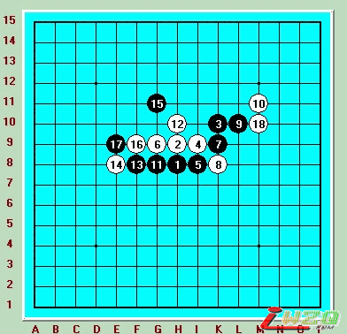
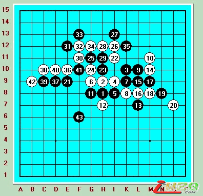
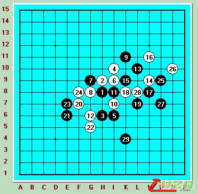

菜鸟的初次比赛-2009腾讯家族赛
#1 菜鸟的初次比赛-2009腾讯家族赛 作者：有志青年 发表时间：2009-3-27 12:38:51
原文地址http://user.qzone.qq.com/455140298
下棋有一年多的时间了，从最初被砍得落花流水到现在偶尔也能赢一两盘，觉得下棋的日子还是有很多收获的。不过从来没有参见过任何的比赛（网络），实战更是没什么参加机会的了。本次腾讯组织QQ2009家族团体赛吸引了14个家族的参赛，也算高手云集了，偶抱着被大师们虐待中学习的态度也参加了，就怕给家族拖后腿 。但我真的很喜欢那种认真严谨的下棋环境，也管不了那么多了，硬着头皮上就是。
第一轮就让偶上， 第一次参加这样的比赛心理难免紧张，甚至有些过度。所以我就一直喝水，喝水。。。。正式开始时都有好几个空瓶子摆在桌上了。疏星开棋，我自己本来就觉得疏星黑很难控制，但赛前有准备一个变化，也是一种侥幸心理，希望对手下错就开了疏星，如图这个11小黑的下法到18黑必胜。

不过对手肯定不会那么轻易中招，12后我就知道很难了，13到17局部做棋进攻，我也知道这样的进攻不会有任何好处，就是找不到合适的方法过渡去控制外围，18防守同时眠3，19活3盖掉，20必然。这时候我知道再去强行做棋进攻的话估计就收不回来了，干脆就走这个21控制外围，很飘的样子 。让对手去攻吧，也没看到白有什么好的做棋点22 23到30都是很平常的走法 ，就是不断的相互交换。31，执行我一贯的宗旨，全力抢占外围 。 32 33后我发觉白没什么机会进攻了，黑控制得还算满意。34必然要把这里交换掉。36活3，进攻型防守，37我若从上面反3的话，又给白做出一些东西来了，于是直接防下，上面白没有任何威胁，38防守，39先活3占掉白的好点。40冲掉。42挡外。此时整个棋盘也只有下面的空间可下了43也没怎么想就随便飘了步，我想这盘棋职至少能和了，对手进人读秒一个没注意就超时了。我就这样幸运的获得第一盘胜利，老实说这盘棋凭我的棋力多半会走和。 （全图如下：）

还米得休息就接着进入第二盘，对手开出瑞星。 瑞我总觉得黑还是很好控制的。不过赛前又恰恰有个瑞的变化准备（骗着）。也是我低估了对手的实力就把这个用上了，比赛后后悔莫及，只能怪自己 。
瑞星2打，到11都没什么可变的，12下G6的这个点是老定式，我本来更喜欢L7或者 L8。13最强，14 定式的分支，一直到19正常，20冲掉 22做杀，23唯一防。24！骗 （直接就是败着）不过像我这样的菜鸟第一次遇到的话是杀不了的，于是乎也期待对手杀不了，黑贸然进攻白反而更好下。可我错了。对手思考了几分钟走出了必胜 。这盘其实是心理上有些问题，就不该走什么骗，何况这个骗并不是有多么滴高明。第一盘赢了的情况下第二盘如果采取和棋战术交换过来下大定（虽然很猥琐 ）也基本能保证和棋滴。（全图如下：29后黑简单必胜）

第二 三轮我休息，而家族的其他选手都很棒，很胜利的进入了第四轮（第三轮后淘汰了积分最后的4支家族。）第四轮我又是第一个出场，听说我对手是职业4段的（狂冒汗 ），不过经过了这么几轮，心态得到了调整，不管对手有多强，我自己尽力就好了。疏星开局，我干脆不换了，我想如果换了我会死得更早。这个5我一点都不熟悉（米办法，太菜）没几步就脱谱了，凭感觉下呗，18似乎很大胆，19思考了好几分钟下在G11，大师们的下法果然很是理智，我第一次觉得很难防了，大概觉得也能防住20直接挡33点。21 23 的做棋意料之中，24我在H11和I11之间犹豫了下，黑根据我下的点会有不同的进攻方向（左边或者右边）短暂的衡量了下我还是下在H11。黑毫不犹豫的就27，29拓展，虽然也是意料之中 但下出来后才能感觉到优势之巨大（或者说已经必胜了，没去细算）30看来看去也只能挡I13这里了，31 33迅速冲了出来 ，35！意料之外，我总去算35向上活，没想到他却向下！我知道对手可能已经算出杀了 ，也不想了，就跟着他快，41 43 45后我马上停住——黑没杀了。46跳出做长连，48挡外面。 （41下O8本来就杀了，对手漏杀，原因不详）49到53简单的处理下这边后对手转向防守E10。56我执白第一次拿到先手开始在F5做棋进攻，同时封掉黑的活2。一直攻到66，黑67 69之后我后悔了，我算得太简单。69后有简单的VCF，70无奈防守，读秒都到了最后几秒。71 73！连续进攻，我马上知道坏了，如果让对手占到D9就绝对无防了，但一分钟的读秒不给我任何机会慢慢算。75后我自己都下晕了，76冲一直交换到80。81！正如我所料。彻底崩溃。后面挣扎了几下95后我投子认负。这盘棋让我看到什么叫差距。本来56后是我在进攻，去不经意下出66坏手，后面防守得也比较弱。主要是小看了对手前面棋的余味，没想
#2 Re:菜鸟的初次比赛-2009腾讯家族赛 作者：小丸.net 发表时间：2009-3-27 12:54:00
黑石很漂亮。棋评很精彩。#3 Re:菜鸟的初次比赛-2009腾讯家族赛 作者：wrwak 发表时间：2009-3-27 14:09:54
这界面 难道棋谱都保存为pos？